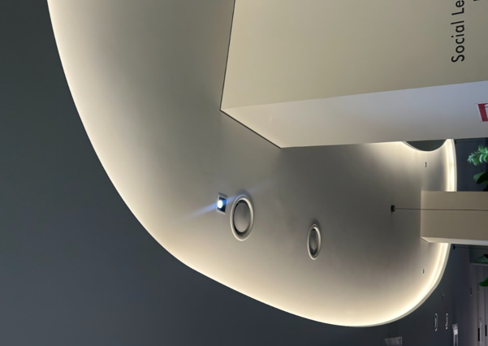
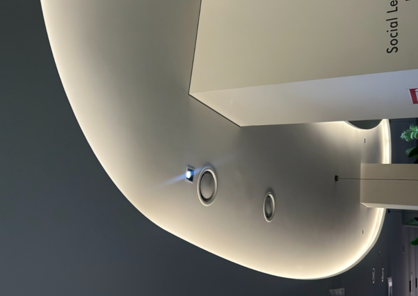
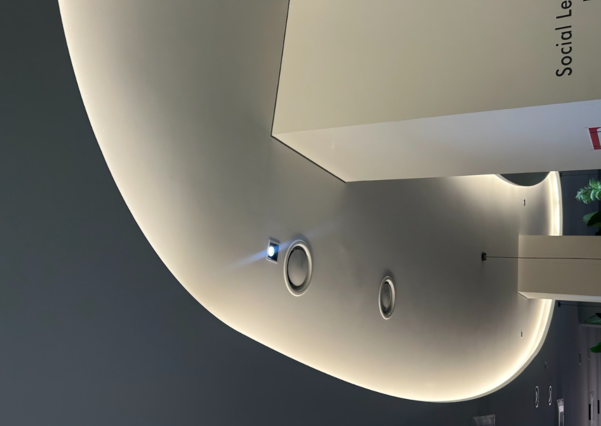

2. 선(Line)
선은 조형 예술의 가장 기본적인 요소 중 하나로 움직이는 점에 의하여 2차원의 평면에 연속적으로 만들어지는 표시를 말합니다.
선은 위치뿐만 아니라 굵기(굵고, 가늘고), 모양(곡선, 직선), 길이, 방향, 움직임 등을 가지고 있으며, 어떻게 사용하느냐에 따라 다양한 감정을 전달할 수 있습니다.
선은 굵기에 따라 힘을 조절할 수 있으며, 선의 방향은 시선을 유도하는 중요한 역할을 합니다.
또, 선에 의해 다양한 모양과 크기로 면을 분할할 수 있고, 선의 형태에 따라 딱딱하거나 부드러운 감정을 전달하며, 움직임에 따라 역동적이고 활동적인 느낌을 주기도 합니다
